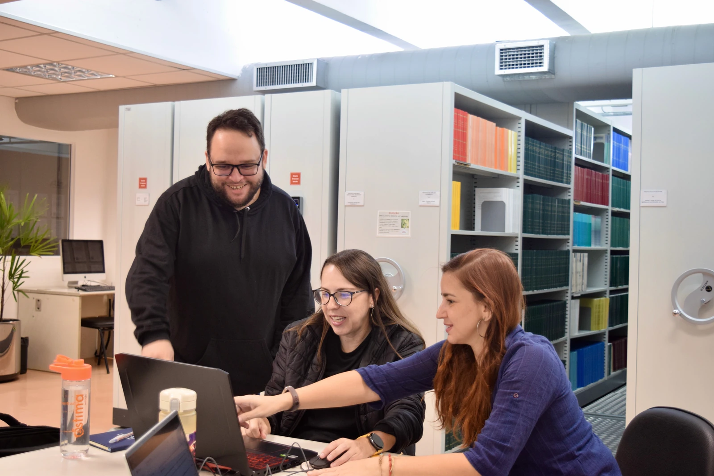

Virtologia: da compreensão à prática
O livro trata as virtudes como competências a desenvolver no cotidiano. Estudo, exercício, aplicação e acompanhamento integram a formação da responsabilidade, da honestidade e da consideração pelo outro.
Brasil Soberano aproxima formação humana e participação pública. É uma mobilização para levar ao debate sobre o país propostas orientadas pela dignidade, pela responsabilidade e pelo serviço ao interesse coletivo.
No livro Brasil Soberano, Eduardo Casarotto articula a Virtologia e a Humanização 2.0 a caminhos para educação, saúde, trabalho, segurança, reintegração social e gestão pública.
Baixar o livro em PDFEduardo Casarotto · 271 páginas · PDF gratuito · 3,6 MB


A obra reúne essas duas dimensões: o desenvolvimento de quem participa da vida pública e a organização dos ambientes em que as pessoas estudam, trabalham, decidem e convivem.
O livro trata as virtudes como competências a desenvolver no cotidiano. Estudo, exercício, aplicação e acompanhamento integram a formação da responsabilidade, da honestidade e da consideração pelo outro.
Regras, processos, relações e decisões participam da experiência humana. A proposta examina como a gestão pode sustentar o desenvolvimento das pessoas e responder às suas necessidades.
As propostas conectam a formação humana ao funcionamento das instituições. Entre os caminhos desenvolvidos na obra estão:
Humanização do ambiente escolar, formação dos educadores e ensino de virtudes, considerando as fases da vida e as condições de aprendizagem.
Critérios para incorporar o cuidado às práticas de gestão, com responsabilidades, acompanhamento e atenção às condições de quem trabalha e de quem utiliza os serviços.
Formação e cuidado para profissionais de segurança e defesa, junto a percursos de desenvolvimento em virtudes para pessoas privadas de liberdade, como O Novo Eu.
O Inteiras articula autonomia, igualdade e responsabilidade, com propostas formativas para escolas e sociedade e atenção à proteção de quem sofre violência.
Planejamento dos investimentos a partir das necessidades da população, transparência na representação de interesses e formação em virtudes de agentes públicos, pelo Brasil Íntegro.
Compartilhamento do conhecimento produzido nos serviços públicos, cooperação entre instituições e uso de dados para aprender com as experiências e orientar decisões.
O livro apresenta desenhos de programas, cartas de apresentação e sugestões de instrumentos legislativos como contribuições ao debate sobre o país.
Desenho jurídico, orçamento, avaliação e implementação fazem parte da construção institucional de cada proposta, com participação de quem tem responsabilidade e conhecimento em cada área.
O Humanar aproxima o desenvolvimento humano das comunidades, das instituições e do poder público. Brasil Soberano amplia essa conversa, tendo a obra de Eduardo Casarotto como referência para discutir propostas para o país.
Nosso compromisso é com a dignidade das pessoas e com uma cultura pública orientada pelo cuidado, pela responsabilidade e pelo serviço. Ler, compartilhar e debater as propostas são formas de participar dessa construção.
Conheça as propostas no livro completo e converse com o Humanar sobre possibilidades de diálogo, estudo e cooperação.
Brasil Soberano · Eduardo Casarotto · 271 páginas · ISBN 978-65-82192-08-1